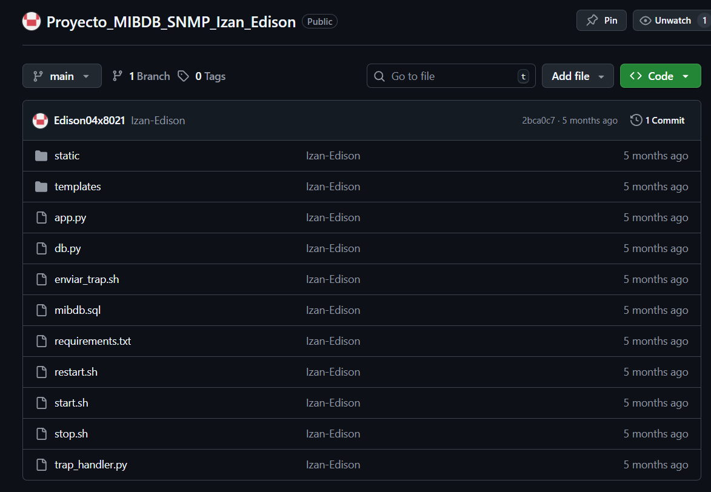
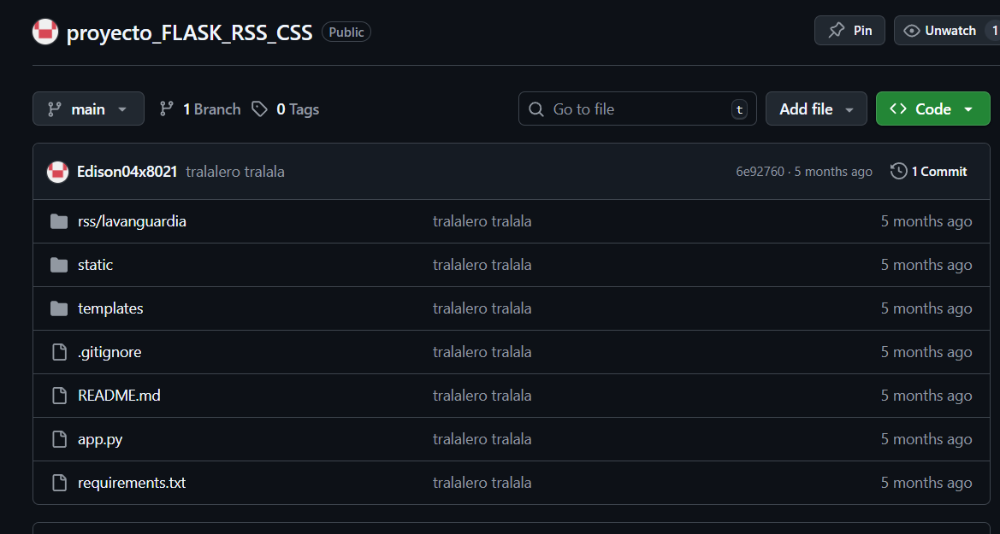
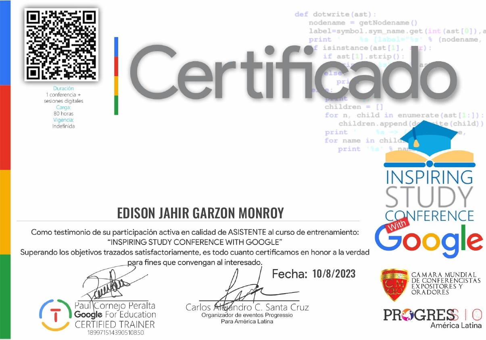

Hola, soy Edison Garzón
Estudiante de Administración de Sistemas Informáticos en Red, con experiencia en soporte técnico, administración de servidores y desarrollo web con Python y Flask. Me apasiona la tecnología, la automatización y la mejora continua de procesos IT.
Descargar CVSobre mí
Soy adaptable, disciplinado y con una gran capacidad de aprendizaje. Vivo en Vilafranca del Penedès y siempre doy lo mejor de mí en cualquier ámbito, comprometiéndome con los objetivos que me planteo y trabajando de forma proactiva para alcanzarlos. Frente a los desafíos técnicos actúo con iniciativa y orientación a resultados, buscando soluciones eficaces y medibles. Me gusta profundizar en aquello que no conozco e investigo de forma autónoma para adquirir el conocimiento necesario y evitar repetir errores en el futuro. Fuera del trabajo hago ejercicio regularmente como parte de mi rutina para mantenerme en salud y mejorar mi rendimiento físico y mental.
Mis Habilidades
Sistemas y Servidores
Virtualización, Almacenamiento y Backups
Redes y Seguridad
Soporte, Servicios y Scripting
Formación Académica
CFGS Administración de Sistemas Informáticos en Red
Institut Joaquim Mir (España) — 2024–2026 (en curso)
Bachillerato Técnico en Servicios Contables
Unidad Educativa Santa María de los Ángeles (Ecuador)
Ofimática
Universidad Agraria del Ecuador — Manejo avanzado de herramientas de Microsoft Office y gestión documental
Experiencia Profesional
Técnico Helpdesk – GESTINET
Vilafranca del Penedès | Febrero 2025 – Julio 2025
- Soporte técnico Nivel 1 y 2 a usuarios (remoto/presencial).
- Administración de servidores Linux y recursos compartidos (Samba/SMB).
- Administración de identidades (Active Directory local, Microsoft 365, Entra ID).
- Gestión de tickets (Zammad) y monitorización proactiva (Tactical RMM).
Técnico de Soporte y montaje informático – Compumundo Store
Guayaquil, Ecuador | Diciembre 2023 – Agosto 2024
- Ensamblaje y configuración de PCs, instalación de drivers y software.
- Atención al cliente en tienda y asesoramiento tecnológico.
- Control de stock e inventario, reporte de productos faltantes.
- Soporte técnico básico en equipos y periféricos.
Dependiente Polivalente / Cajero – Marathon Sports
Guayaquil, Ecuador | Abril 2023 – Octubre 2023
- Atención y asesoramiento en área deportiva.
- Gestión de caja, arqueo y cierres diarios.
- Organización de stock y reposición de productos.
- Cumplimiento de metas de ventas y satisfaction del cliente.
Proyectos Destacados

Simulación Clúster HPC con Docker y Bacula
Despliegue automatizado de un entorno de computación de alto rendimiento (OpenMPI) y respaldos empresariales (Bacula) en contenedores Docker sobre almacenamiento LVM.

Proyecto MIBDB_SNMP
Monitorización de red con SNMP y base de datos MIB para diagnóstico de dispositivos.

Proyecto FLASK_RSS_CSS
Aplicación web en Flask que integra fuentes RSS y ofrece una interfaz responsiva y moderna usando CSS.
Certificados
